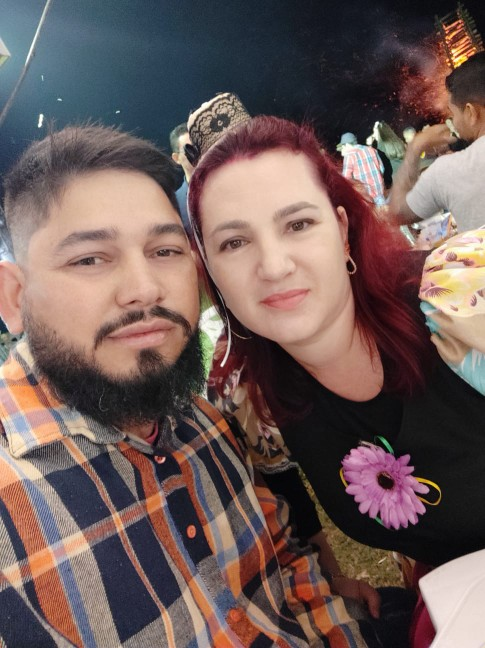

Quem eu sou?
Meu nome é Tatiane, tenho 40 anos, sou casada, mãe de uma filha que esta completando 18 anos esse ano, sou profissional da área da saúde.


Amante de livros, apaixonada pelos meus animais e aventureira na arte de cultivar plantas.


Transição de carreira
Amo minha profissão na área da saúde, desde que eu me lembro, sonhei em trabalhar cuidando de outra pessoas. Faço com dedicação o meu trabalho e tenho orgulho do que eu sou por causa dele.
Recentemente, descobri que a menina dos meus olhos são duas, e meu olhar passou a enxegar a tecnologia, tão presente no nosso dia a dia. Hoje, depois de muito lutar, me rendi a ela e voltei a estudar cursando Análise e desenvolvimento de sistema. Fácil não esta, conciliar toda uma rotina aos novos projetos esta sendo um desafio, mas eu não sou de desistir fácil